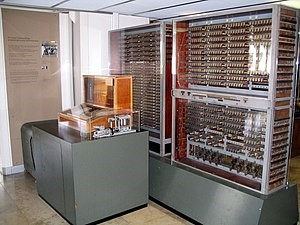

Για να μετακινηθήτε στην χρονογραμμή
μετακινήστε την συσκευή αριστερά η δεξία
Την τέταρτη γενιά, που εμφανίζεται στις αρχές τις δεκαετίας του 70 και η οποία χαρακτηρίζεται, από τη περαιτέρω τεχνολογική εξέλιξη, στον τομέα των ολοκληρωμένων κυκλωμάτων. Η εξέλιξη αυτή οδήγησε στην κατασκευή των ολοκληρωμένων κυκλωμάτων υψηλής πυκνότητας
(VLSI).
1940

1941 ή Z3 του Konrad Zuse
Είναι ο πρώτος προγραμματισμένος υπολογιστής του κόσμου. Κατασκευάστηκε με 2200 ηλεκτρονόμους. Οι υπολογισμοί γίνονταν με δυαδική αρίθμηση κινητής υποδιαστολής. Η μηχανή αυτή καταστράφηκε στον βομβαρδισμό του Βερολίνου.
1941